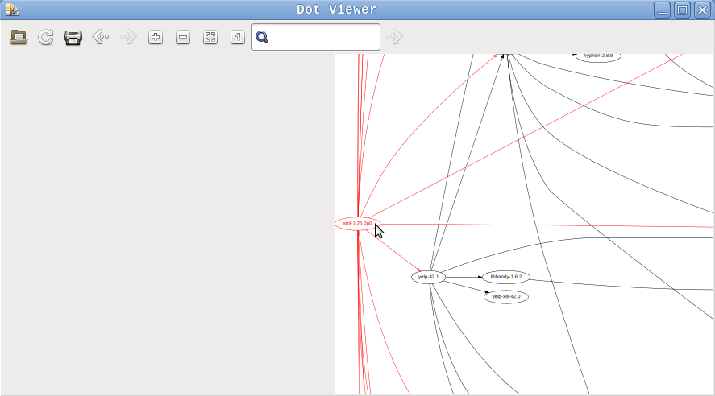

Objetivo
Ver de forma gráfica las dependencias entre los paquetes de OpenBSD instalados desde ports. Esto es porque a medida que se van instalando paquetes aumenta significativamente la cantidad de dependencias transitivas y se busca una forma de visualizar este aumento.
Para ello se utilizará la información brindada por pkg_info y se transformará a una imagen utilizando graphviz
Prueba de creación de imagen con graphviz
Se desea generar una imagen a partir de la información de un gráfo dirigido, ya que esta es una forma natural de modelar dependencias entre paquetes.
Por ello comenzamos buscando en la galería del sitio web, en particular la sección de grafos dirigidos.
De los ejemplos decidí elegir Go Package Imports ya que modela un ejemplo de dependencias y me agradó la visualización. Revisando el ejemplo, se encuentra que es posible agragar información extra para que al ser generada una imagen svg y pasar el cursor sobre los distintos nodos se muestre esta.
También, viendo el ejemplo UNIX Family 'Tree' se deduce que no es necesario generar un nombre de nodo auxiliar y puede utilizarse directamente el nombre que se mostrará en el nodo.
Para obtener el archivo de ejemplo se hace:
$ ftp 'https://graphviz.org/Gallery/directed/go-package.gv.txt'
Luego hay que asegurarse de tener instalado el programa graphviz:
$ doas pkg_add graphviz
Para generar un svg a partir del archivo de ejemplo se utiliza el comando
dot como se indica en la
documentacion de linea de comandos:
$ cat go-package.gv.txt | dot -Tsvg > /tmp/go-package.gv.svg
$ firefox 'file:///tmp/go-package.gv.svg'
Nota 1: se supone instalado el navegador firefox (obviamente), y se utiliza este
para que se visualice la información del tooltip. Por ejemplo, con Eye of
Mate/eom se visualiza la imagen pero no se visualiza el tooltip.
Nota 2: se genera el archivo en /tmp ya que por defecto en la configuracion de
unveil, /etc/firefox/unveil.main, /tmp es una ruta permitida.
Con lo anterior ya se comprobó que es posible generar y visualizar un grafo dirigido.
Como un segundo ejemplo de prueba para asegurarnos que se puede utilizar como etiqueta el nombre del nodo hacemos:
$ cat <<'END' | dot -Tsvg > /tmp/test.svg
digraph regexp {
fontname="Helvetica,Arial,sans-serif"
node [fontname="Helvetica,Arial,sans-serif"]
edge [fontname="Helvetica,Arial,sans-serif"]
paq1 [tooltip="Info paq 1"];
paq1 -> paq2;
paq2 [tooltip="Info paq 2"];
paq3 [tooltip="Info paq 3"];
}
END
Y el paquete se genera como deseamos:
Generación de imagen de dependencias
Siguiendo el manual de pkg_info, para obtener la información de las
dependencias se puede utilizar pkg_info -A -f. El problema es que se devuelve
mucha más información de la deseada. Para obtener solamente la información
de los paquetes y sus dependencias filtramos por las anotaciones @name y
@depend cuya información se encuenra en los manuales de pkg_create y
package. Ya que la anotación @depend tiene el formato
@depend pkgpath:pkgspec:default se utilizará sed para eliminar los valores
pkgpath:pkgspec y dejar solamente el valor de default:
$ pkg_info -A -f | grep -e '^@name' -e '^@depend' \
| sed 's/^@depend .*:\([^:]*\)$/@depend \1/' > /tmp/dependencies.txt
Luego, se utilizará awk para generar el archivo dependencies.dot necesario
para generar el grafo con graphviz:
$ awk -f generate-graph.awk /tmp/dependencies.txt > dependencies.dot
$ cat dependencies.dot | dot -Tsvg > /tmp/dependencies.svg
El archivo generate-graph.awk es extremandamente sencillo:
BEGIN {
print "digraph dependencies {\n fontname=\"Helvetica,Arial,sans-serif\"\n node [fontname=\"Helvetica,Arial,sans-serif\"]\n edge [fontname=\"Helvetica,Arial,sans-serif\"]"
hasdeps=1
}
/^@name/ {
if (!hasdeps)
printf " \"%s\" ;\n", current
current=$2
hasdeps=0
}
/^@depend/ {
printf " \"%s\" -> \"%s\" ;\n", current, $2
hasdeps=1
}
END {
print "}"
}
En este se inserta el cabezal y la cola del archivo utilizando BEGIN y END.
Luego, cuando se encuentra @name si el paquete anterior no tuvo por lo menos
una dependencia se imprime el nombre del paquete anterior para que se visualice
el nodo. El paquete actual pasa a ser el valor de @name. Al encontrar
@depend imprimimos la dependencia "paquete1" -> "paquete2" ; e indicamos que
el paquete actual del cual se imprimen las dependencias tuvo por lo menos una.
Las comillas que rodean al nombre de los paquetes es necesaria ya que sin esta
graphviz da warnings por el uso de .xxx en los textos.
El resultado:
Pensamiento: ¿Porqué no hay una opción en los gestores de paquetes para mostrar el grafo de dependencias? ¡Supongo que porque es enorme y es imposible de ver de forma satisfactoria!
Filtrado de nodos, vista izquierda-derecha y alternativas a svg
Desconforme con el resultado, pero no rendido, ¿no habrá una forma de filtrar los nodos de forma tal que se pueda mostrar la dependencia de un solo paquete?. Quizás si un paquete tiene una cantidad razonable de dependencias la imagen con las dependencias se vea mejor.
Para ello se busca en el sitio web de graphviz en la documentación y se encuentra gvpr:
NAME
gvpr − graph pattern scanning and processing language
DESCRIPTION
gvpr (previously known as gpr) is a graph stream editor inspired by awk. It copies input graphs to its output, possibly transforming their structure and attributes, creating new graphs, or printing arbitrary information. The graph model is that pro vided by libcgraph(3). In particular, gvpr reads and writes graphs using the dot language.
Suena interesante ...
Buscando en internet, se encuentra que en la ahora abandonada lista graphviz-interest ya preguntaron lo que deseamos lograr:
I'd like to take a (rather complicated) graph, and, given a certain node X, remove all nodes which are not direct descendants or ancestors of X
BEG_G {
graph_t sg = subg ($, "reachable");
$tvtype = TV_fwd;
$tvroot = node($,ARGV[0]);
}
N {$tvroot = NULL; subnode (sg, $); }
END_G {
induce (sg);
write (sg);
}
Este código lo guardaremos como el archivo fwd.g.
Para utilizar el programa anterior hay que hacer utilizar el nombre de un nodo
del grafo, que corresponde a un programa instalado. Ejemplificando con las
dependencias de atril-1.26.0p0:
$ gvpr -a 'atril-1.26.0p0' -f fwd.g dependencies.dot | dot -Tsvg > dependencies-atril-1.26.0p0.svg
Y nos queda la imagen
Sigue sin estar genial, pero está mucho mejor.
Otra mejora que se le puede hacer es agregando el atributo
rankdir="LR" (encontrado durante la lectura de la
documentación en el sitio de graphviz). Para hacer este cambio hay que cambiar
el script de awk para agregar en el bloque BEGIN la linea,
quedando:
BEGIN {
print "digraph dependencies {"
print " fontname=\"Helvetica,Arial,sans-serif\""
print " node [fontname=\"Helvetica,Arial,sans-serif\"]"
print " edge [fontname=\"Helvetica,Arial,sans-serif\"]"
print " rankdir=\"LR\""
hasdeps=1
}
Generamos nuevamente la imagen:
$ pkg_info -A -f \
| grep -e '^@name' -e '^@depend' \
| sed 's/^@depend .*:\([^:]*\)$/@depend \1/' \
| awk -f generate-graph-v2.awk > dependencies-v2.dot
$ gvpr -a 'atril-1.26.0p0' -f fwd.g dependencies-v2.dot | dot -Tsvg > dependencies-atril-1.26.0p0-v2.svg
Obtenemos:
Esta última imagen a mi criterio está mejor.
Sobre la visualización, está claro que no es práctico estar generando un archivo svg cada vez, por lo que también busqué como mejorar esta parte.
El comando dot entre sus opciones de salida incluye el formato Xlib, que en lugar de generar un archivo nos muestra la salida en pantalla. Esto nos ahorra el tener que generar un archivo svg y abrir un programa para visualizar dicho archivo:
$ gvpr -a 'atril-1.26.0p0' -f fwd.g dependencies-v2.dot | dot -Tx11
Lo cual se ve como:
La salida anterior está bien, pero... ¿es lo mejor que se puede conseguir?
Navegando por el sitio de graphviz, en la página de resources se listan varios viewers. De entre ellos, xdot.py es de los pocos que no aparece como abandonado y aparte está empaquetado para OpenBSD, por lo que procedemos a instalarlo y probarlo:
$ doas pkg_add xdot
$ gvpr -a 'atril-1.26.0p0' -f fwd.g dependencies-v2.dot | xdot -
Lo cual se ve como:

Bueno, se ve casi idéntico pero realmente tiene la ventaja de la interacción
para recorrer el grafo. En lo personal lo prefiero a utilizar dot -Tx11.
¿Haciendo un programa?
Bueno, ya tenemos resuelto:
- como generar un grafo de dependencias a partir de todos los paquetes instalados en el sistema
- como filtrar el grafo anterior, dejando solo las dependencias de un paquete dado
- como visualizarlo de forma interactiva
Lo que estaría faltando es una forma de obtener una lista de los paquetes
instalados (pkg_info -q) y a partir de allí poder elegir de forma interactiva
uno de estos paquetes para visualizar las dependencias.
Como opción se toma zenity.
¿Porqué zenity? Porque es una forma sencilla de crear un diálogo. Para este caso se quiere listar las dependencias y seleccionar solo una: un radiolist (o radio button).
En la documentación de zenity se indica que cada fila debe
empezar con el texto FALSE y partiendo del ejemplo hacemos creamos una lista
de radio buttons con los paquetes instalados manualmente:
$ pkg_info -q -m | sed 's/^/FALSE /' > packages-manual.txt
$ zenity --width=640 --height=800 --list --radiolist --title="Dependency viewer" --text="Select a package" --column="" --column="Package" $(cat packages-manual.txt)
calibre-5.39.1
Lo cual vemos como:
Al seleccionar un paquete (calibre-5.39.1 como se ve en la captura anterior)
se obtiene un string con el nombre del paquete.
En caso de presionar el botón Cancel se obtiene exit status de 1 y ningún
texto.
En el caso de querer elegir entre todos los paquetes instalados hay que
utilizar pkg_info -q -a.
Con lo anterior ya podemos enganchar la salida de zenity con el uso de gpvr y
crear el programa view-dependencies que tiene como puntos relevantes:
-
Precálculo. Para acelerar las consultas se generan archivos temporales que luego serán utilizados para mostrar los diagramas:
-
Creación de directorio temporal y
trappara eliminar los archivo al salir del programa:WORKDIR="$(mktemp -d -t view-dependencies.XXXXXXXXXX)" trap 'rm -r "$WORKDIR"' EXIT -
Creación de archivos para
awkygpvrcuyo contenido está en el script. Esto ocurre ya que se desea que el script sea autocontenido y no que sea necesario instalar otros scripts en el sistema. -
Lista de paquetes a partir de
pkg_info:pkg_info -q -a/pkg_info -q -m. Se crea la lista de paquetes de forma tal que al principio estén los paquetes instalados de forma manual y luego el resto de los paquetes que se encuentran instalados. -
Generación de grafo:
pkg_info -A -f \ | grep -e '^@name' -e '^@depend' \ | sed 's/^@depend .*:\([^:]*\)$/@depend \1/' \ | awk -f "$WORKDIR/generate-graph.awk"
-
-
Selección de paquete a visualizar. Esto se realiza utilizando
zenity:zenity --width=640 --height=800 --title="Dependency viewer" \ --list --radiolist --text="Select a package" \ --column="" --column="Package" \ $(cat "$WORKDIR/package-list.txt") -
Filtrado del grafo utilizando
gpvry visualización utilizandoxdot:gvpr -a "$1" -f "$WORKDIR/fwd.g" "$WORKDIR/package-dependencies.dot" \ | xdot -
Los últimos dos pasos se realizan en un loop, para poder aprovechar el cache generado.
Además, se agrega la opción para poder generar un archivo svg desde linea de
comandos utilizando dot -Tsvg y que guarda en el archivo
dependencies-for-<package>.svg las dependencias de un paquete dado.
Como ejemplo de invocación podemos usar:
$ ./view-dependencies.sh firefox-99.0.1
El cual nos genera el archivo dependencies-for-firefox-99.0.1.svg:
Conclusiones
Bueno.. fué largo el post, llevó muchos días y tuvo unas cuantas actualizaciones.
Con el programa creado me es posible revisar las dependencias de programas
instalados. Luego de utilizarlo un rato entiendo porqué se llenó tanto el
directorio /etc, siendo que cuando se instala el sistema desde cero
prácticamente no hay archivos en este. El escritorio mate que me parecía
liviano resulta que tiene una cantidad importante de dependencias. Ya estoy
pensando en una alternativa al visor atril. Por el lado de [firefox], no hay
tantas dependencias.
El único pendiente es tener una función de búsqueda de paquetes en la GUI, en lugar de tener que estar haciendo scrolling.
Una segunda funcionalidad deseada sería poder limitar la profundidad del grafo para los casos de paquetes con muchas dependencias, de forma tal de poder visualizar mejor el grafo.
Apendice - Uso de xlink:title por parte de graphviz
Revisando como se genera el tooltip en el archivo svg se encuentra que es
mediante el agregado del atributo xlink:title, el cual se encuentra
deprecado.
La sugerencia es pasar de utilizar el atributo xlink:title a utilizar un nodo
hijo de tipo <title> cuyo contenido sea el texto.
En el foro de graphviz se indica el código que genera el tooltip en el archivo gvrender_core_svg.c por lo que puede ser una tarea sencilla realizar el cambio.